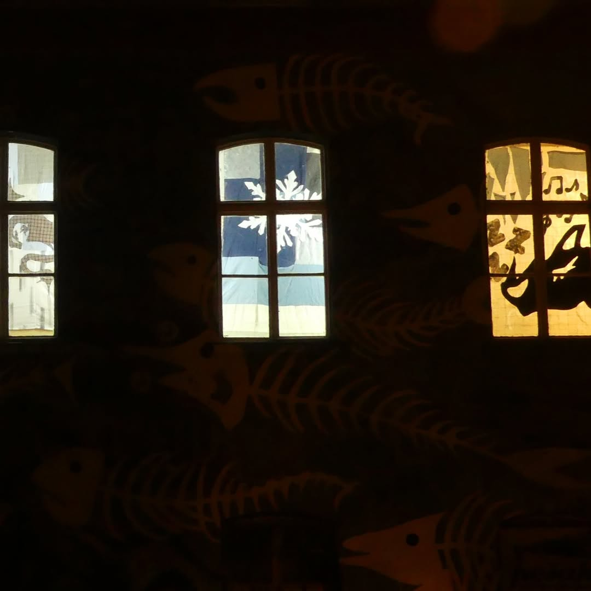
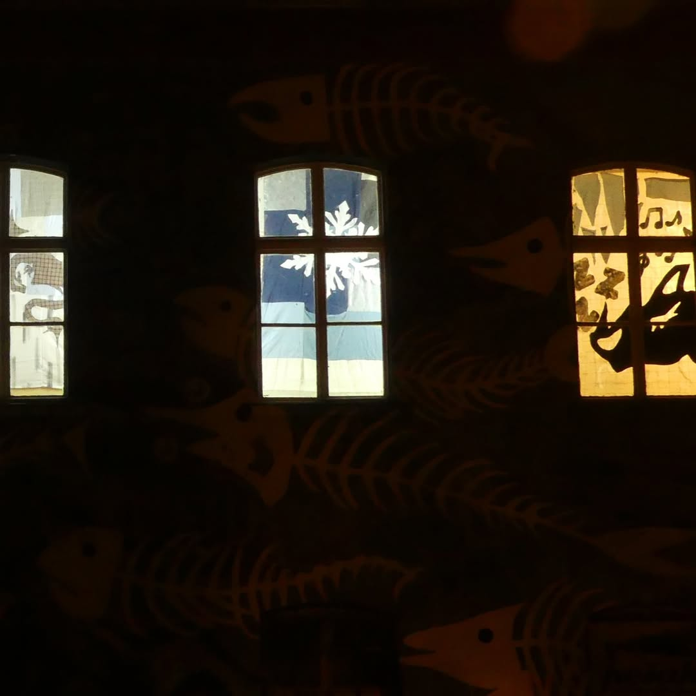

Sleeping Dragon, Sleeping Dragon
graphic design, layout, illustration
V razstavi “Sleeping Dragon, Sleeping Dragon” Juhant raziskuje temo cikličnosti, hibernacije in krhkega ravnovesja med mirovanjem ter aktivnostjo. Osrednji motiv je zmaj, mitska beštija, ki tokrat ni prikazan v svoji mogočni, aktivni obliki, temveč kot speča sila. Slednja simbolizira zimski spanec, hlad in predvsem latentno nevarnost – opozorilo, da v naravi vedno obstaja potencial za nenadno spremembo.
Skozi ustvarjalni proces je Juhant navdih črpal iz narave, zimskih vzorcev, materialnosti tekstila in reciklaže. Njegova dela, tokrat v celoti izdelana iz blaga, so raznolike aplikacije, ki prehajajo med abstraktnimi in figuralnimi upodobitvami. Tri tekstilne slike so posvečene zimskim in spalnim motivom, kot so ledeni kristali, snežinke in zvezde, medtem ko dve figuralni razstavo konceptualizirata s podobama spečega zmaja in plezalca. Umetnik plezalca umesti kot zmajevega skrbnika – podoba, ki uteleša dinamično nasprotje spečega stanja. Zmaj kot prastara sila, ki je povezana z zemeljskimi in naravnimi ritmi, simbolizira cikličnost narave, a obenem predstavlja spečo nevarnost in nas opozarja na absurd odgovornosti, ki smo si jo nakopali. Stanje latentne krize, ki smo jo ustvarili, zdaj terja stalno skrb in pazljivost, da navideznega ravnovesja – na katerega imamo manj vpliva, kot si želimo verjeti – ne porušimo prehitro, saj se zavedamo, da je zmajevo prebujenje navsezadnje neizogibno. Umetnik s tem odpira vprašanje, kako dolgo lahko ohranjamo to krhko ravnotežje in se prilagajamo svetu, v katerem se prehod iz stabilnosti v katastrofo že dogaja.
Razstava s svojo tekstilno poetiko in recikliranimi materiali poudarja pomen trajnosti in raziskuje možnosti za nove zgodbe in pomene, ki jih ti materiali lahko nosijo. Preko premišljenih kompozicij nas Juhant vodi skozi domiselno pragmatičen dialog med toplino tekstila in hladom zime. “Sleeping Dragon, Sleeping Dragon” je zgodba o zimskem snu, odgovornosti in neizbežnem prehodu v novo stanje.
Tekst: Lučka Zajc
Foto: Boško Rakočević
 
